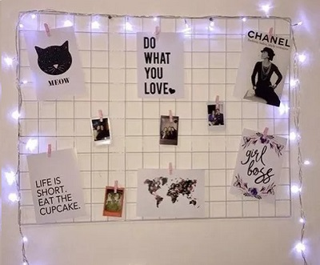

Você conhece a Stabilo?
A Stabilo veio para mudar o mercado da papelaria trazendo canetas, lapis e marcadores. São matérias extremamente confortavel na sua escrita.

O que é um Planner?
O planner normalmente é utilizado para darmos conta de todas as nossas metas nas várias áreas da vida, recorrendo a boa velha organização.

Como funciona o Board?
Existe alguns tipos de Boards o memory board é utilizado para recordar memorias ja vivenciadas. O board ele pode ser interativo para guardarmos objetos, em cozinhas, salas e etc...